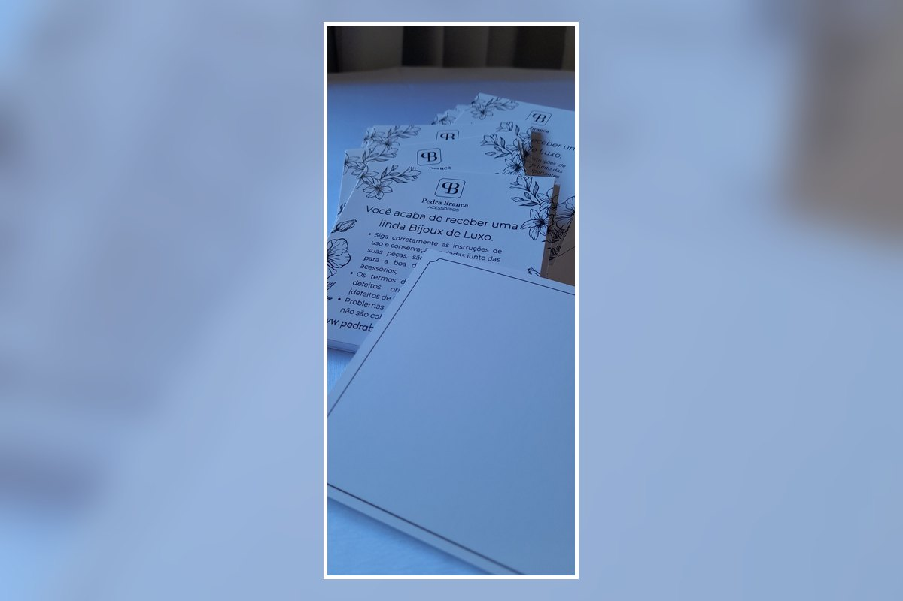

Cuidados e conservação
Organize instruções de limpeza, armazenamento, uso e outras recomendações importantes para o produto.
Entregue junto ao produto um cartão personalizado com orientações de conservação, limpeza, uso e armazenamento. Além de ajudar o cliente a cuidar melhor da peça, o material reforça a apresentação e a identidade da sua marca.

O cartão de cuidados pode ser adaptado às orientações específicas de cada marca e produto, deixando a comunicação mais clara para o cliente.
Organize instruções de limpeza, armazenamento, uso e outras recomendações importantes para o produto.
Inclua logo, cores, contatos, redes sociais e informações que reforcem a apresentação profissional do pedido.
Ideal para lojas de acessórios, marcas autorais, semijoias, presentes e outros produtos que precisam de orientações ao cliente.
Envie sua arte, referência ou as informações que deseja colocar no cartão pelo WhatsApp. Confirmamos formato, material, quantidade, prazo e valor antes da produção.
Envie sua referência e solicite um orçamento personalizado.